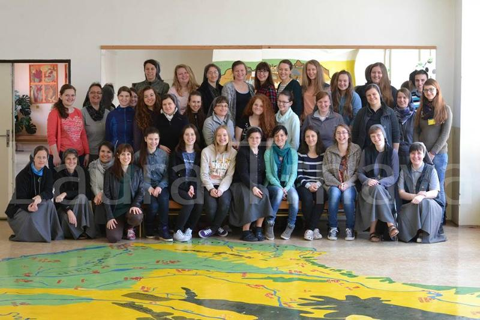
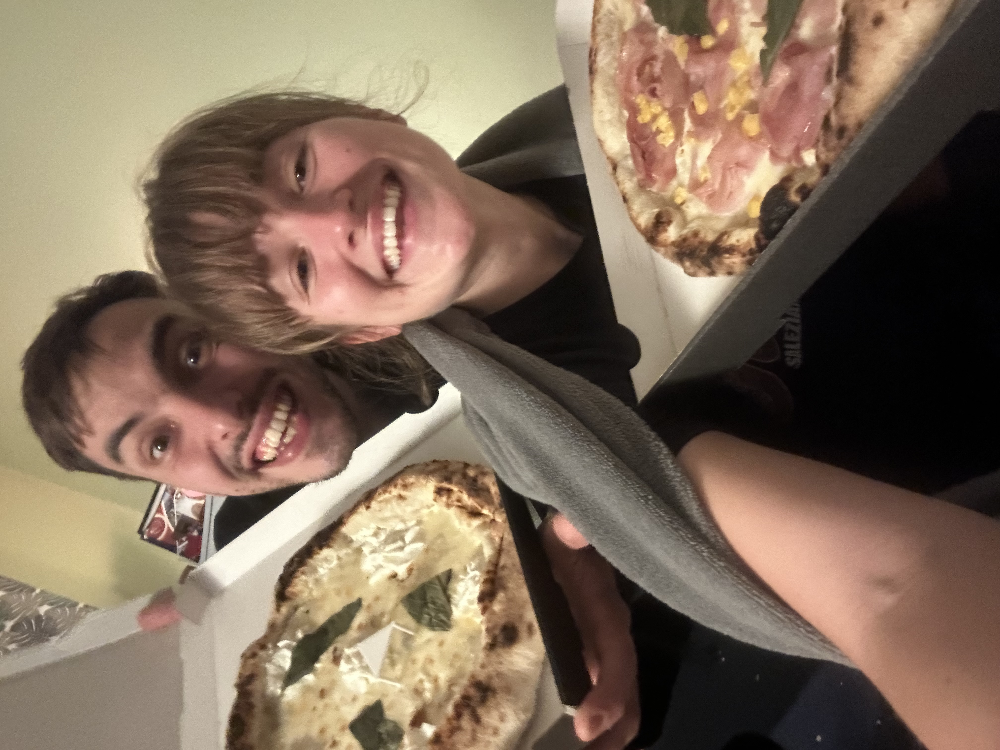
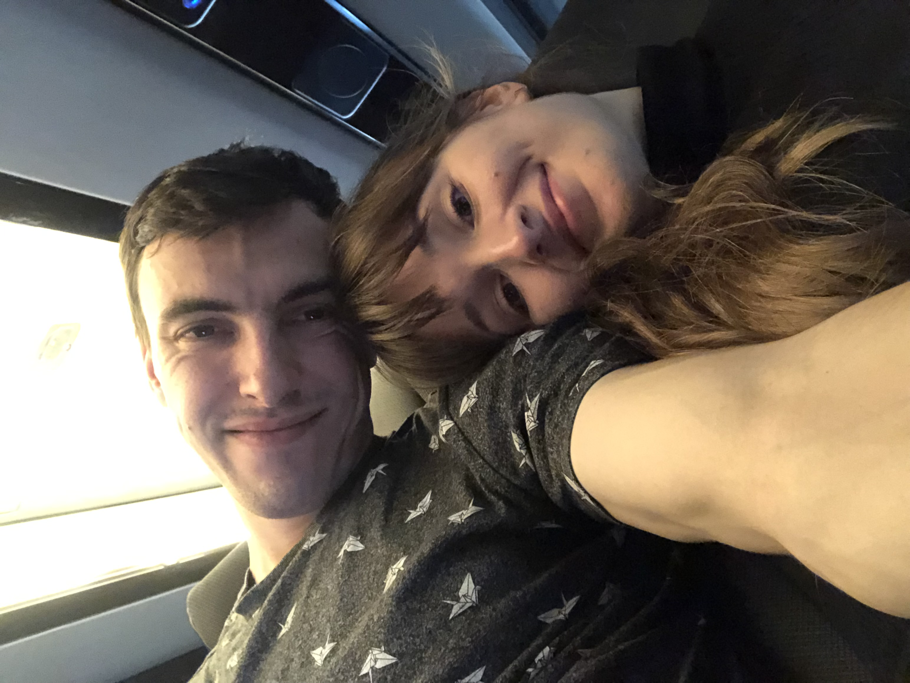
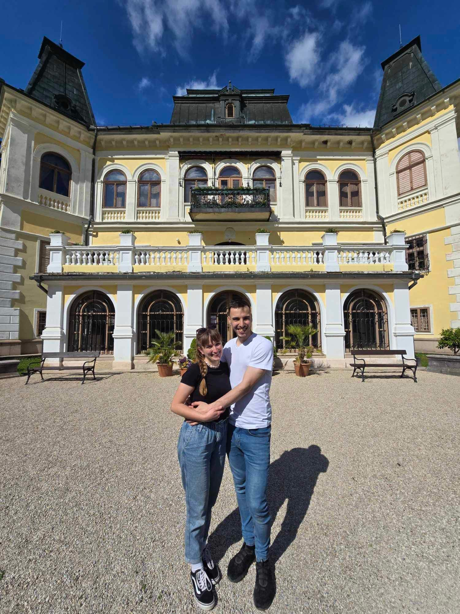

❓ Ako sme sa spoznali
Zoznámili sme sa na letnom tábore pri dobrovoľníctve. Dvaja východniari sa stretli na Záhorí. Dodnes sa smejeme, že sme sa stretli práve v Kuchyni. Toto je naša prvá spoločná fotka spolu s ostatnými animátormi.

Milí hostia, chceli by sme vás poprosiť o potvrdenie účasti a vyplnenie potrebných informácií do 31.03.2026.
Potvrdiť účasťObrad sa začína o 15:00 v kostole Panny Márie, Pomocnice kresťanov - Saleziáni Michalovce, na ulici Špitálska 15.

Pri kostole (1) je k dispozícii parkovanie na hokejbalovom ihrisku v areáli saleziánskeho strediska (3). Ďalšie voľné parkovanie je pri COOP Jednote (4), v uličke medzi Úradom práce a saleziánskym strediskom smerom ku Chemkostav aréne (5), prípadne pred OTP Bankou (6).
Po svätej omši a gratuláciách sa spoločne presunieme do hotela Glamour na Šírave, na adrese Kaluža 744, kde budeme pokračovať v oslavách až do skorého rána. ;)

Cesta na hotel trvá autom približne 15 minút.
Pri hoteli (1) je voľné parkovanie (2) priamo popri príjazdovej ceste po odbočení z hlavnej cesty.
Kvety nám zvädnú, dary nám zapadnú prachom a žreby... tie nám doteraz aj tak nikdy nevyšli. Ak nám chcete urobiť radosť, budeme vďační za príspevok na náš začiatok a spoločné dobrodružstvá. Poteší nás čokoľvek, čo je ploché, papierové a zmestí sa to do jednej nenápadnej obálky. :)
Zoznámili sme sa na letnom tábore pri dobrovoľníctve. Dvaja východniari sa stretli na Záhorí. Dodnes sa smejeme, že sme sa stretli práve v Kuchyni. Toto je naša prvá spoločná fotka spolu s ostatnými animátormi.

„A Janka, keď budeš cestovať z Bratislavy zo školy domov do Michaloviec, nezastavila by si sa v Košiciach?“ znela jedna z prvých nesmelých otázok v telefóne. A tak sa to začalo – stretávanie sa v Košiciach na stanici, prechádzky mestským parkom a sledovanie západov slnka na vyhliadkových miestach. Fotka je zo sledovania západu slnka na košickom sídlisku Heringeš.

Začali sme sa stretávať, spoznávať, cestovať naprieč celým Slovenskom jeden za druhým. Každý spoločný moment nás spájal ešte viac.

V lete 2024 sme boli na výlete v Ríme, neskôr vo Fatime a Lisabone a kúpali sme sa v oceáne. Po dlhom čase sme obala žili v jednom meste, a tak sme mohli tráviť spolu oveľa viac času.

Ešte malú chvíľu predtým sme si dali langoš s bryndzou a poriadnou nádielkou cibuľky. Janka netušila, čo ju o pár minút čaká. Daniel sa odhodlal a po rokoch spoločného vzťahu pokľakol v Bratislave na Františkánskom námestí – presne tam, kde Janku po prvýkrát chytil za ruku. Bolo to prekvapenie. Do toho nám v pozadí hrala pieseň „Opri sa o mňa“.

Obaja máme radi pohyb. Medzi naše spoločné obľúbené športy patrí bicyklovanie, beh, posilka, či turistika. V kolektívnych športoch sa však nezhodneme, u Dana to vyhráva futbal, u Janky zas volejbal. A prečo tento dátum? Od začiatku roku 2025 máme obaja multisportku a odvtedy športujeme ešte viac!

Vďaka tipu od známych z párových stretiek v UPC sme sa odhodlali na niečo netradičné – vyrobiť si obrúčky vlastnými rukami. Bol to čarovný deň v dielni, počas ktorého sme sledovali, ako sa surový kus zlata pod naším úsilím mení na dva symboly nášho sľubu.







